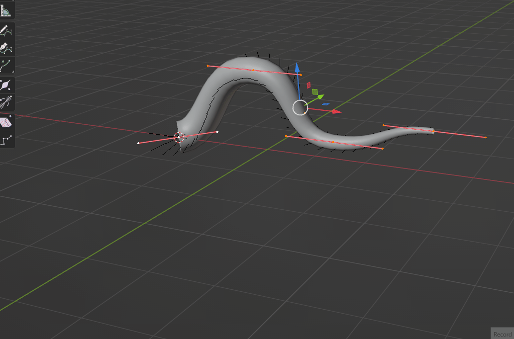
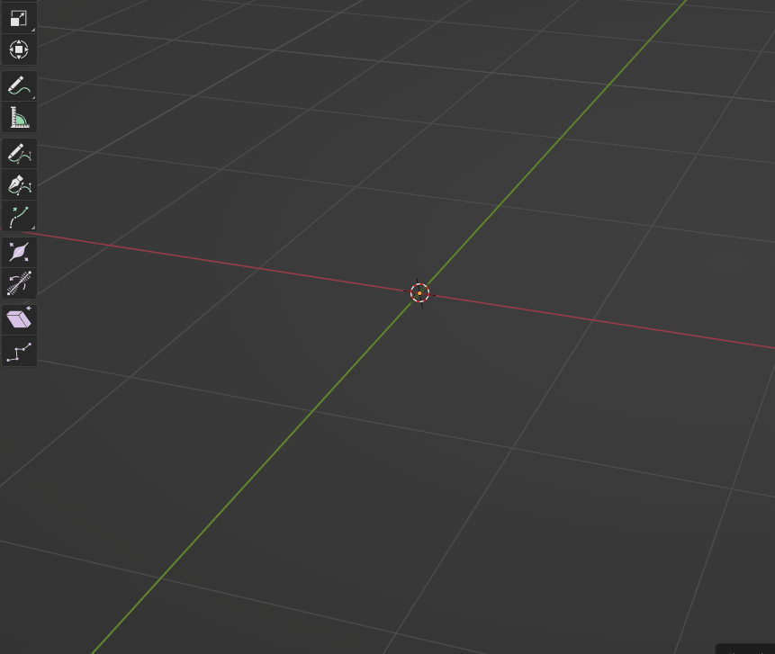
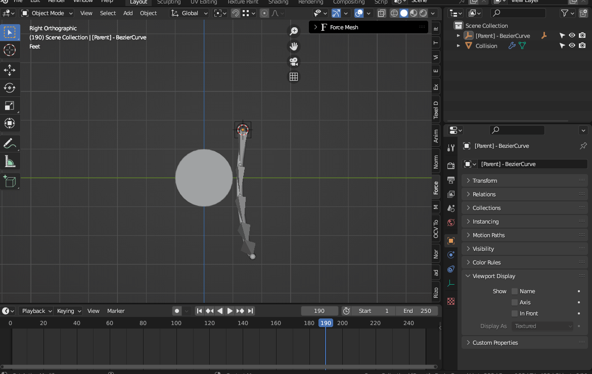
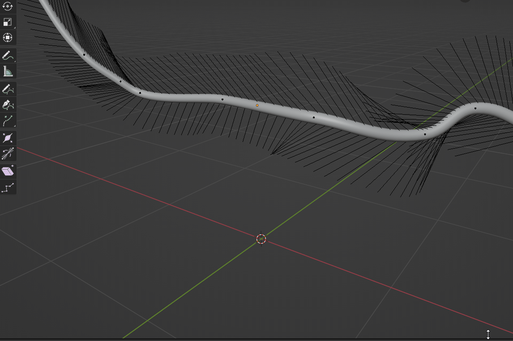
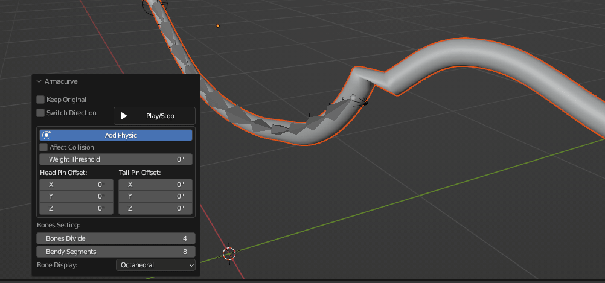
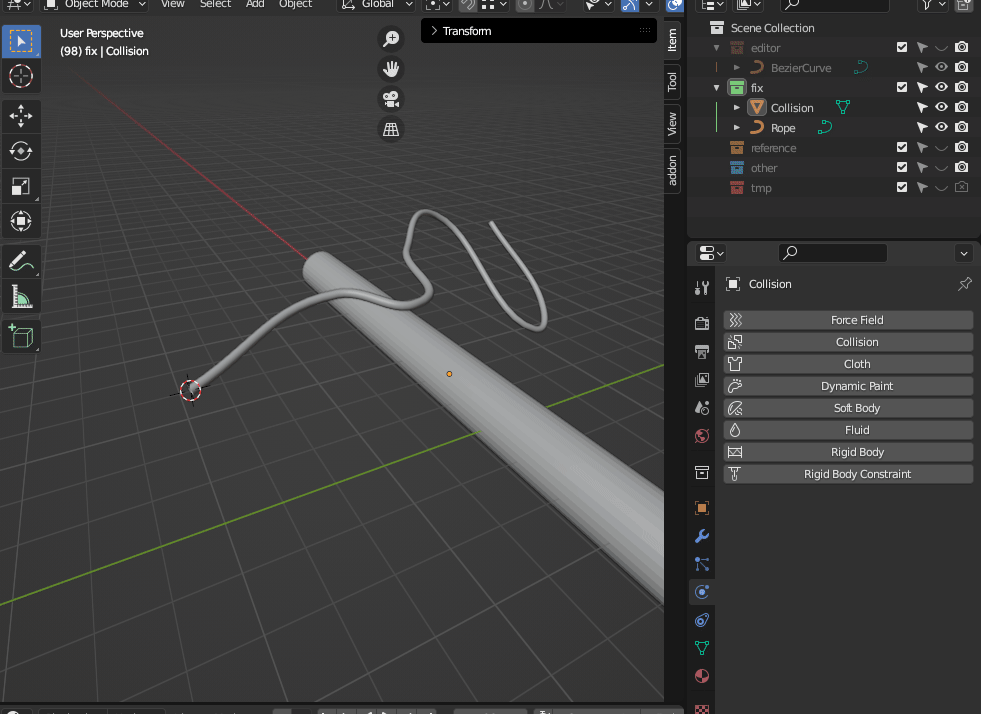
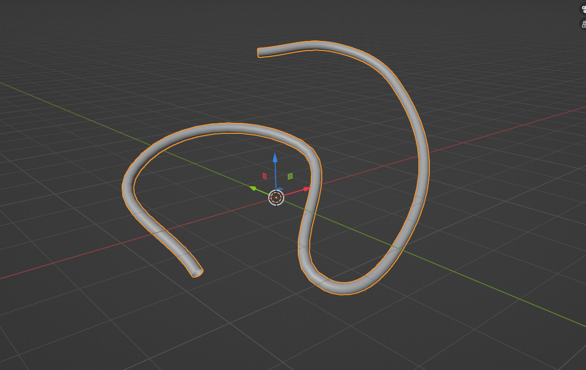
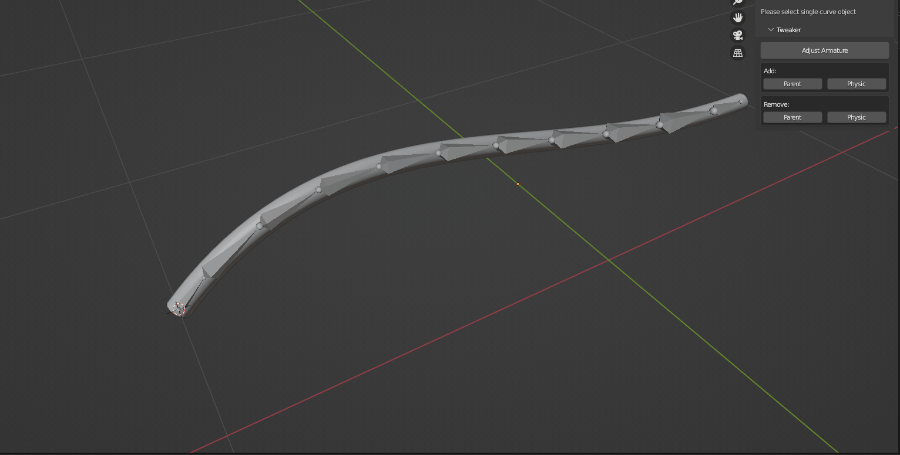

Blender add-on for curve rigging
Turn Bezier curve objects into controllable armatures, mesh rigs, helper-driven setups, and optional cloth-based motion without rebuilding the rig by hand.

Build curve-based rigs for tentacles, cables, vines, tails, stylized props, and other spline-driven shapes.
Curve objects are fast for blocking shapes, but turning them into practical rig controls can become repetitive. Armacurve handles the setup work: it reads the curve, generates the rig structure, links the result back to the original workflow, and gives you options for pinning, display, B-Bone preview, and physics setup when the project needs motion.
Select a Bezier curve and generate an armature from it. Adjust bone division, B-Bone subdivisions, display type, and visual size directly in the operator options.

Preview and tune the rig result without losing momentum. B-Bone display options help you see how the generated armature follows the curve depth and shape.

When working in Curve Edit Mode, use the selected-only operator to process a connected section of a single spline. This is useful when you only need one portion of a curve converted into a mesh rig.

Pin the head or tail and adjust local XYZ offsets to reduce stretching. Weight threshold controls help refine how the generated mesh responds to the rig.

Armacurve can add cloth-based physics to generated setups and enable collision influence when your target objects have Collision modifiers. This is best for simple curve rigs where lightweight motion is enough.

Use Add Object Helper to place Empty objects on curve points and hook the curve to those controls. It is a direct way to animate or position a curve through viewport-friendly handles.

After generating an Armacurve setup, select the generated armature and use the Tweaker panel to adjust the armature, add or remove parent controls, and add or remove physics helpers.

Find Armacurve in the 3D View sidebar under Tool > Armacurve, or use the default pie menu shortcut Shift + Alt + C.
Please do not purchase Armacurve only for the physics feature. The core purpose of the add-on is curve-to-bone, curve-to-mesh rigging, helper creation, and rig adjustment.
If you have a question before purchasing, feel free to contact me. I am happy to clarify workflow details, limitations, and whether Armacurve fits your specific rigging use case.